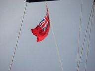

|


|
Foggy night
» exacte locatie
 Het eerste etmaal zit er al op! We hebben rustig zeilweer, nu windkracht 3/4 recht van achteren. Vannacht hebben we erg veel mist gehad, dat vonden we best spannend omdat we geen radar hebben. Onze NL buren zijn net wat sneller (grotere boot) en hebben een radar. Was erg fijn, want ze riepen ons op als er een grotere boot op ons af kwam. Ze konden op de radar mooi zien dat ze voor ons uitweken en wij hebben niks gezien, alleen wat gemotor gehoord... Vlak na mijn wacht, toen ik net in bed lag, zag Joost dolfijnen! Echt geweldig! En dat in het donker. s Ochtends kwamen ze weer! Ze zijn echt een uur rondom de boot blijven spelen. Ze waren met een hele groep en vonden het vooral leuk om synchroon op te duiken. Vanmiddag hebben we ook nog walvissen gezien. Echt mooi wat je zo tegen komt. Vanmorgen stond er zo weinig wind dat we de Bolle Jan (soort spinaker) voor het eerst hebben aangeslagen. We hadden geen idee hoe dat zat, maar na anderhalf uur stond ie! Was een erg mooi gezicht. We hebben m er maar wel gauw afgehaald toen het harder ging waaien. Nu varen we alleen op de Genua en gaan 5.6 knopen. Daar zijn we erg blij mee, want we varen gemiddeld 4.5. Nieuwe foto's kunnen we op de site zetten als we internet hebben, die komen dus nog.
Het eerste etmaal zit er al op! We hebben rustig zeilweer, nu windkracht 3/4 recht van achteren. Vannacht hebben we erg veel mist gehad, dat vonden we best spannend omdat we geen radar hebben. Onze NL buren zijn net wat sneller (grotere boot) en hebben een radar. Was erg fijn, want ze riepen ons op als er een grotere boot op ons af kwam. Ze konden op de radar mooi zien dat ze voor ons uitweken en wij hebben niks gezien, alleen wat gemotor gehoord... Vlak na mijn wacht, toen ik net in bed lag, zag Joost dolfijnen! Echt geweldig! En dat in het donker. s Ochtends kwamen ze weer! Ze zijn echt een uur rondom de boot blijven spelen. Ze waren met een hele groep en vonden het vooral leuk om synchroon op te duiken. Vanmiddag hebben we ook nog walvissen gezien. Echt mooi wat je zo tegen komt. Vanmorgen stond er zo weinig wind dat we de Bolle Jan (soort spinaker) voor het eerst hebben aangeslagen. We hadden geen idee hoe dat zat, maar na anderhalf uur stond ie! Was een erg mooi gezicht. We hebben m er maar wel gauw afgehaald toen het harder ging waaien. Nu varen we alleen op de Genua en gaan 5.6 knopen. Daar zijn we erg blij mee, want we varen gemiddeld 4.5. Nieuwe foto's kunnen we op de site zetten als we internet hebben, die komen dus nog.
|
|
|

Klaar voor Biskaje
» exacte locatie
Na een week de weerkaartjes goed in de gaten te hebben gehouden kunnen we gaan! Het schijnt dat na een tijdje van laaggedrukgebieden en zuidwesten wind er hier een periode komt met noordwesten wind en dat die vaak stabiel is. In juni t/m augustus is dat bijna altijd het geval, maar wij zijn laat en dan moet je dus extra goed het weer checken. Als het goed is blijft het tot en met zaterdag rustig zeilweer en hebben we dus 4/5 dagen voor de Golf van Biskaje. Het is een afstand van 320 mijl en in theorie zou je dat in 3 etmalen kunnen zeilen, mits je genoeg wind hebt natuurlijk. Aangezien we met onze 60 liter diesel 40 uur kunnen motoren zijn we toch ook echt afhankelijk van de wind. We kijken heel erg uit naar Spanje. Het Spaanse vlaggetje had ik op Alderney al af (die was lekker makkelijk). Van Silvia (vriendin van mij) hoorde ik dat het in heel Spanje bloedje heet is behalve in het stuk waar wij heen gaan (we willen naar la Coruna, noordwest Spanje). Ze schreef ook dat in NL de nazomer eindelijk is begonnen. Na 2 dagen in de mist voor anker is het vandaag ook lekker weer. Ik heb echt nog nooit zolang zoveel mist gezien. Gisteravond gingen we pannenkoeken eten bij onze buren maar toen we terug wilden naar onze boot konden we 'm door de mist nauwelijks onderscheiden. Ik vind het echt super luxe dat ik nu vanaf de boot de site kan updaten zonder wifi. Dat heeft Joost toch mooi voor elkaar gekregen. Het zou ook erg leuk zijn als het lukt om tijdens het zeilen in de Golf een stukje op de site te zetten (hangt een beetje af of we zeeziek worden...). De Biskaje klusjes zijn af (harpjes borgen, eerste reeflijn vervangen, dat soort dingen) en straks gaan we alles goed vastzetten en het bed verhuizen. Het is fijner om midscheeps te slapen, in de voorpunt is het zo'n geklots. Verder ga ik zo vast bedenken wat we gaan eten de komende dagen en dat op een slimme plek bij elkaar zetten zodat ik niet hoef te zoeken, want dat is niet echt een pretje op een bewegende boot. Corry (de moeder van Joost) heeft speciale ham voor ons gekocht die lang goed blijft en daar gaan we eens van genieten!

|
|
|
Camaret sur mer
» exacte locatie
Geen internet en de site uit de lucht...Maar het is 1 september,dus die doet het weer(hopelijk) en Joost heeft de mail via de zender gemaakt! Deze tekst gaat straks via radiogolven naar een internetverbinding van iemand die ook een SBB-zender heeft maar dan met internet zodat t goed komt! Vanuit Guernsey zijn we weer naar het vaste land van Frankrijk gevaren. We wilden graag ver komen dus besloten we aan de wind een ondiep stuk over te varen. Hiervoor werden we beloond met hoge maar vooral erg steile golven! Gelukkig kwamen we daardoor lekker dichtbij het doel van die dag, dachten we...We gingen steeds langzamer tot we met de motor voluit slechts 0.9 knoop liepen (1.5 km per uur). We hadden de stroming flink onderschat, want het was springtij. Terug ging veel sneller (10 knopen!) en hebben we de eerste boei gepakt om aan te liggen. We vroegen nog aan de Fransman voor ons we hier okee lagen en volgens hem was dat pas de probleme. s Nachts werd ik ineens wakker omdat we onrustig lagen en daar kwam ons toetje voor die dag... de dieptemeter gaf 0.9 meter aan. Niet grappig! We steken 1.40 meter. We lagen nog recht en Joost zocht uit dat het over 3 kwartier eb zou zijn. We zijn buiten gaan zitten en de boot zakte weg en ging schuin liggen! Gelukkig hebben we slechts een half uur in deze onnatuurlijke positie aan de hoge kant van de boot gezeten en kwam de boot rechtop en weer lekker verder slapen. Na al deze acies letten we nog beter op de stroming, tij en verval. Via dagtochten (Ile de Brehat, Roscoff, Aberwrack) zijn we eindelijk het kanaal uit! Camaret is leuk en vanuit hier kun je mooi de oversteek naar Spanje maken. Nu wachten op NW wind. Leuk is dat we nu tussen twee andere NL vetrekkersboten liggen.
|
|
|
Wind tegen (stroom)
» exacte locatie
Tja, eergisteren lagen we dus op Alderney en we wilden ondertussen wel
graag weer een stukje verder varen. Maar dat gaat soms zomaar niet.
Als je van Alderney weg wilt moet je namelijk door "The Swinge" heen.
Dat is een stukje water waar heel erg veel stroom staat. Zoveel dat je
op het hoogtepunt van de stroming er totaal niet tegenin komt, ook
niet met de motor. Dus is het logisch om daar doorheen te gaan met de
stroom mee. Maar, er is nog een ander effect en dat heet "wind tegen
stroom". Als de windrichting tegengesteld is aan de stroming dan
ontstaan er in de Swinge dangerous overfalls zoals de kaart ze
omschrijft. Overhangende golven, bekend uit de surfwereld. Hoe harder
het waait en/of stroomt hoe extremer dit effect. Op de dag dat wij weg
wilden was de wind ZW kracht 5 en we moesten, met stroom mee dus, naar
het ZW. Om het zo leuk mogelijk te houden zijn we vertrokken precies
op het moment dat de stroming op z'n zwakst is. Op dat moment zagen we
om ons heen ook talloze andere bootjes losgooien, dus we werden wel
bevestigd in de juistheid van onze berekeningen. Maar goed, toen we
eenmaal aan het begin van die Swinge waren bleken al die boten net te
willen gaan starten met een wedstrijd. Kris kras door elkaar voeren ze
voor een denkbeeldig startlijn en wij zaten daar middenin te klooien.
En naarmate we dichter bij het kanaal kwamen werden de golven ook
steeds extremer. Die wedstrijdboten gevuld met ervaren locals gingen
er wel in, maar wij hadden eigenlijk weinig zin in zo'n
kermisattractie. En er bleek ook geen enkele niet-wedstrijdboot te
zijn uitgevaren. Dus omgedraaid en met motor en zeil vol bij hebben we
de haven weer kunnen bereiken. Geen geslaagde actie, maar je probeert
eens wat, toch? De volgende dag was de wind nog steeds tegen, maar nu
slechts kracht 2-3. Een mooi moment voor een nieuwe poging. Deze keer
lukte het met weinig moeite, maar het was duidelijk te zien dat de
Swinge geen fijn water is. Zelfs met dit rustige weer waren overal
vreemde draaikolken en gekke stukken volledig vlak water of juist
steile golven te zien. Eenmaal hier voorbij was ons plan om tegen de
(rustige) wind in de hele nacht door te varen op de motor om snel bij
de west kant van Bretagne aan te komen. Maar helaas na een tijdje
kregen we een weerbericht waarin werd gesteld dat de wind zou
aantrekken tot 5-6 en tegen de golven die dat geeft wil je eigenlijk
niet op de motor urenlang in boksen. Dus zijn we uitgeweken naar
Guernsey waar we het anker hebben laten zakken. Een beetje
teleurgesteld omdat we dat Engels kanaal nou nog niet uit zijn. En wat
zie je dan als je midden in de nacht eens controleert of je nog goed
op het anker ligt: een spiegelgladde zee, de perfekte omstandigheden
om op de motor te varen. Dan zeggen we maar tegen elkaar dat het
verderop vast wel hard waait... Dit is het soort dingen waar je aan
moet wennen. En het is misschien toch ook wel het leuke van varen,
want zo gebeurt er nog eens iets verrassends. Op dit moment liggen we
namelijk in de gezellige haven van St Peter Port, hebben we weer
internet en is het weerbericht voor morgen NW, zodat we naar Bretagne
kunnen zeilen (wat natuurlijk beter is dan motorren over een vlakke
zee). Tot slot, een andere verrassing die we anders waren misgelopen
is het wel erg vreemde vaartuig dat op de foto te zien is. In eerste
instantie dachten we: een catamaran die voor een windmolen langsvaart,
dat moet het toch
zijn? Maar na goed kijken bleek die windmolen toch echt ook te varen!
Deze figuur heeft dus gewoon zijn zeilen en giek van z'n boot gesloopt
en er een full-size windgenerator opgeschroefd! En dan varen op
elektriciteit. Lekker makkelijk, nooit zeil minderen en altijd
alle koersen bezeild. Misschien ook nog een optie voor ons...
")
")
")
|
|
|
Brood maken
» exacte locatie
We zijn zelf gaan ankeren vandaag! Dat is voor het eerst met ons
nieuwe anker en tot nu toe bevalt ie prima. Aangezien we geen zin
hebben om voor een van ons een watertaxi (is 6 euro!) te bestellen om
alleen maar een brood te kopen besloot ik om er zelf een te maken. Het
recept had ik thuis al uitgeprobeerd, maar op een boot is het toch net
iets anders. Het afwegen werd lastig omdat de digitale weegschaal
nergens stil kon staan en je dus een gemiddelde moest nemen van de
waarden die deze aangaf. Lekker handig. Heb er ouderwets de maatbeker
bij gepakt, dat ging een stuk sneller! Flink gekneed maar ondanks mijn
inspanningen (2x 15 minuten pure lichaamsbeweging, die heb ik mooi te
pakken) rees het deeg niet geweldig. Dankzij Gerdie's deegroller het
deeg mooi plat gekregen en er twee rollen van gemaakt en vervolgens
afgebakken in cake vormen. Het resultaat viel me enorm mee en 1 brood
hebben we meteen opgesmikkeld!
|
|
|
Wifi
» exacte locatie
Wifi op de boot is echt fantastisch! Ineens kun je al je favoriete
sites en programmaatjes gebruiken "net als thuis". Populair bij ons
zijn natuurlijk email, windfinder.com (met hele high-tech
windvoorspellingen, daarop is ook te zien dat we voorlopig wind uit
het westen krijgen...) en skype (bellen naar NL voor 1,7 eurocent per
minuut). Soms moet je voor Wifi betalen, soms kun je gratis ergens
aftappen. Op dit moment doen we dat laatste. Maar omdat je al gauw met
je boot te ver geankerd ligt van een nietsvermoedende breedbandabonnee
op de kant, is een richtantenne wel handig. Wij hebben nu een
zelfgemaakte bestaande uit een USB wifi stick en een metalen zeef!
Werkt prachtig, als een schotelantenne.
|
|
|
Alderney
» exacte locatie
Vanuit Dieppe zijn we in een etmaal doorgevaren naar Cherbourg! Dat is
een tocht van 110 mijl alleen bleef de voorspelde zuidoosten wind
helaas uit. Verder hebben we wind uit alle richtingen gehad...De
tweede helft hebben we mooi kunnen zeilen.Voor de lunch had Joost een
makreel gevangen en die hebben we opgegeten, jummie! Wel via de
marifoon contact opgenomen met Martin van de Phoenix, want hij had
goede tips om m te bakken. s Avonds op zee een maaltijd bereid en
vlakbij ons "showers", een prachtig gezicht vooral als je er zelf niet
nat van wordt (ze foto). Ik vond het wel weer spannend om nachtwacht
te hebben. Je kunt aan de kleur lamp (rood of groen) zien welke kant
een boot opvaart. Er kwamen een aantal zeilboten langs en boven me af
en toe onbewolkt met veel sterren. Donderdag kwamen we om 11 uur aan
in Cherbourg. Joost is erg druk gweeest met het vervangen van een
motoronderdeel en ik heb de Engelse zeevlag afgemaakt, zucht, wat een
uitdaging! Was dan ook erg blij toen ie af was. Zaterdag zijn we heel
vroeg opgestaan om met de stroom mee naar Alderney te gaan. Dat was
een lekker kort tochtje. We zijn de Cape de la Hague gepasseerd waar
het een grote klotsende boel is vanwege de gekke stroming. We snappen
nu waaom je die mee wilt hebben..De stroming is hier maximaal 10
knopen en onze boot kan hooguit 6, dus in het slechtste geval ga je 4
achteruit! Alderney heeft geen haven. We liggen hier aan een ankerboei
en dat is niet echt goedkoop, 20 euro per nacht en met de watertaxi
naar de kant kost je 3 euro pp enkele reis! We hebben zelf een
bijboot, maar de motor doet het (nog) niet en peddelen is geen
beginnen aan met de stroming hier. De taxi roep je op met de
marifoon.Alderney is erg mooi, we hebben een paar uur gewandeld en de
rotsachtige kust bewonderd. Helaas geen foto s hiervan want ik was zo
handig om wel de camera mee te nemen maar de net opgeladen batterij
vergeten er in te doen...

|
|
|
Dieppe
» exacte locatie
Na wat radiostilte hier weer wat leesvoer.... In Duinkerke lagen we al
4 nachten bij vloed enorm te klotsen door de deining dat we er
eigenlijk wel weg wilden. 12 augustus vroeg opgestaan en weer
geluisterd. De twijfel sloeg toe, windkracht 5, 6 soms 7 en aan de
wind. Maar het Franse weer bleek vaak te pessimistisch eigenlijk kon
je er standaard een beaufortje aftrekken. Joost raakte in gesprek over
zijn weertwijfel met de Phoenix en zo kwamen we in contact met Rowena
en Martin. We besloten te gaan en het was net niet bezeild voor ons,
maar motorzeilend naar Calais ging goed. De Phoenix ging een stuk
harder dan wij maar ze hebben wel mooie zeilfoto's van ons gemaakt. In
Calais lagen we in een bassin waar je alleen met hoog watre in kon
varen. Dat wordt eindelijk lekker slapen dachten we....Niet
dus....enorme windstoten legden de boot steeds scheef en een enorm
geklapper van vallen en stagen en dat was nog niet alles, want s
nachts deden ze de deur ook open en klotste de zee alsnog naar binnen.
Geen succes, Calais. Volgende dag mooi weer en heerlijk gezeild naar
Boulogne sur mere. De Phoenix ging ook. Prachtige zeiltocht. In
Boulogne had de Phoenix al een plaatsje voor ons . Heerlijk geslapen!
De Phoenix niet zo. Vanwege de hevige regenval de nacht ervoor lieten
ze overtollig regenwater door en dat werd een steeds grotere waterval
achter onze boten. De Phoenix had 2 en een half knoop stroming gemeten
op hun log. Leuk fenomeen hier zijn ook de campers. Ze mogen gratis op
de parkeerplaats staan en staan hutje mutje in enorme rijen en hebben
nog net ruimte om naast hun buren hun stoeltje uit te klappen.
Boulogne zag er leuk uit maar de wind was goed dus gingen we meteen
door. Een etappe van 55 mijl (100 km) naar Dieppe. Dit had Joost
strategisch gekozen vanwege de windrichting en zodat het daarna korter
is naar Cherbourg. De Phoenix lag nog lekker te slapen toen we weg
vaarden maar we hadden afgesproken via de marifoon contact te houden
op 77 (ouwehoerkanaal). Twee uur later kwamen ze achter ons aan maar
ze hebben ons niet ingehaald....Was mooie tocht. We hebben iets meer
zeil gevoerd dan gewoonlijk bij 5, 6 maar dat ging goed! We konden
bijna aan de wind zeilen en dat was ook de koers. Dieppe is een erg
mooi stadje. Eindelijk liggen we in een oud stadje in een enorme
havenkom. Het verval hier is 10 meter!. Met vloed lig je dan nog het
leukst. Je vaart hier ook prachtig langs de krijtrotsen. In Cherbourg
gaan we proberen wat foto's bij de verhaaltjes te zetten. In Dieppe
hebben we weer heerlijk geslapen en een gezellige tijd gehad met de
Phoenix. Die hebben we net uitgezwaaid n wij gaan ook uitvaren, dan
hebben we nog even stroom mee.
|
|
|

|

|
|
|

")
")
")